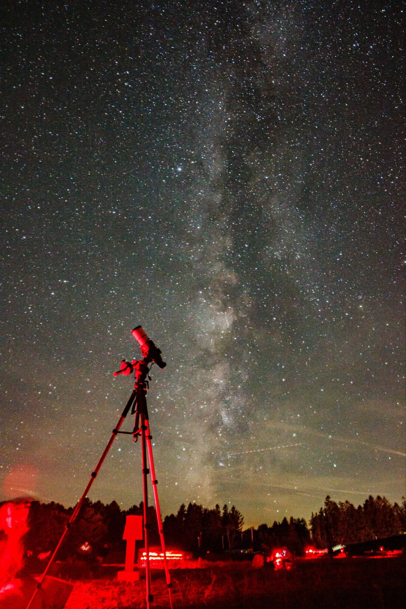

Kasra Sinaei
Deep-sky, lunar and wide-field images, each one a stack of long exposures. Shot with a camera lens or a 60 mm refractor on a star tracker, and a manual Dobsonian for the Moon and planets. Every plate below lists its target, optics and integration time.
27 plates below

Equipment
No observatory and no autoguider. The tracker is an iOptron SkyGuider Pro carrying an Apertura 60EDR, an FPL-53 ED doublet. The Dobsonian is used for the Moon and the planets. Most of the earlier images in this archive were taken with the Canon EF 200mm on a Star Adventurer Mini; the coma in its corners is why I moved to the doublet.